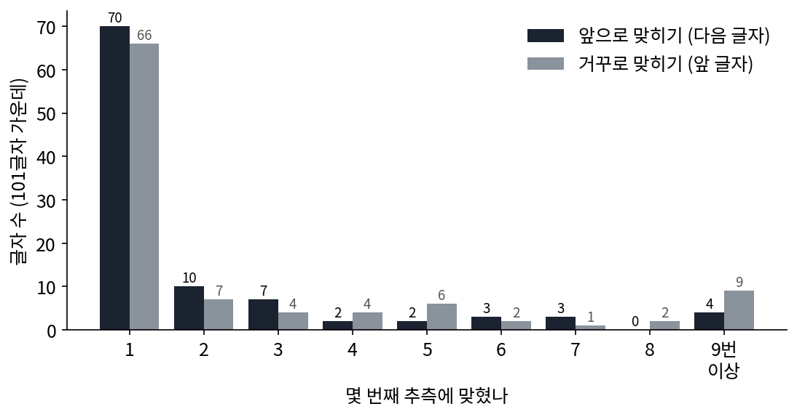
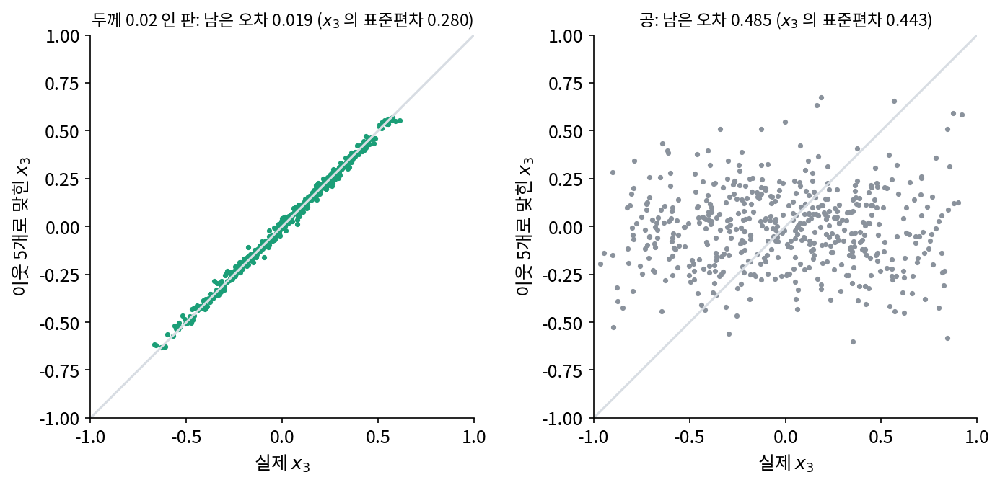

잔차: 맞힌 만큼 새로 적을 것이 준다
지금까지는 점들이 몇 방향으로 퍼져 있는지를 쟀다. 그런데 이 책의 물음은 「얼마나 짧게 적을 수 있나」였다. 판 위의 점은 2차원이라 해도, 실제로는 두께만큼 떠 있어서 셋째 좌표 x₃을 x₁, x₂에서 오차 없이 계산할 수는 없다. 그렇다면 x₃은 결국 따로 적어야 하고, 판 위에 있다는 사실은 아무것도 아껴 주지 못하는 걸까? 친구가 말을 반쯤 하면 나머지를 짐작할 수 있듯, 다 맞히지는 못해도 거의 맞힐 수 있다면 그만큼은 덜 적어도 될 것 같다.
역사: 거꾸로 맞혀도 거의 똑같았다
섀넌(Claude Shannon)이 사람에게 글자를 한 글자씩 맞히게 해서 영어 글자 하나의 정보량을 어림한 실험은 이 시리즈의 동역학 책에서 다루었다. 다음 글자를 첫 추측에 맞히면 그 글자는 거의 새로 알려 주는 것이 없고, 앞을 충분히 아는 사람에게 영어 글자 하나는 평균 1비트 안팎만 새로 알려 준다는 결과였다. 이 실험을 담은 1951년 논문 「인쇄된 영어의 예측과 엔트로피(Prediction and Entropy of Printed English)」(『Bell System Technical Journal』 30권, 50~64쪽)에는 그 책에서 다루지 않은 대목이 두 가지 더 있다.
하나는 거꾸로 맞히기다. 섀넌은 같은 글에서 뽑은 101글자짜리 두 대목으로, 한 번은 앞 글자들을 보고 다음 글자를, 한 번은 뒤 글자들을 보고 바로 앞 글자를 맞히게 했다. 거꾸로 맞히기는 하는 사람에게 훨씬 어렵게 느껴졌지만, 첫 추측에 맞힌 글자는 앞으로 맞히기 70자, 거꾸로 맞히기 66자로 성적이 조금만 나빴다. 섀넌은 글자 n개 묶음의 통계로 정한 엔트로피(글자 하나가 평균으로 새로 알려 주는 비트 수)가 글을 뒤집어도 같다는 것을 식으로 보였다. 이 책 식으로 읽으면, 글이 맞혀지는 까닭은 읽는 방향보다 글자들이 서로를 묶는 규칙에 있다.

다른 하나는 맞힌 순번만 보고 엔트로피의 범위를 정한 방법이다. 섀넌은 책 한 권에서 15글자짜리 대목 100개를 뽑아, 앞 글자를 0개부터 14개까지 알려 준 상태에서 다음 글자를 맞히게 하고, 몇 번째 추측에 맞혔는지의 분포를 셌다. 앞 글자를 100개 알려 주는 시험도 따로 했다. 그리고 그 분포만으로 글자 하나의 엔트로피를 위아래로 가두는 두 식을 냈다(아래 경계는 가장 잘 맞히는 이상적인 예측기에 대해 증명한 것을 사람의 자료에 쓴 것이다). 앞 글자를 하나도 모를 때(이 경우의 순번 분포는 사람 대신 글자 빈도표로 계산했다) 그 범위는 3.19~4.03비트였고, 앞 글자를 100개 알 때는 0.6~1.3비트였다. 맞히는 사람의 머릿속 규칙을 꺼내 보지 않고도, 맞힌 순번만 받아 적으면 「새로 알려 주는 양」의 범위가 나온다. 범위를 내는 두 식은 아래 문제 11에서 직접 써 본다.
이웃으로 x₃ 맞히기
섀넌의 사람 대신, 점 구름에서 가장 단순한 예측기를 써 보자. 점마다 (x₁, x₂)가 가장 가까운 다른 점 5개를 찾아 그 x₃의 평균을 그 점의 x₃으로 맞힌다. 규칙을 모르고 이웃만 보는 방법이라, 판이든 공이든 똑같이 쓸 수 있다.
두께 0.02인 판에서 x₃의 표준편차는 0.280인데, 이웃으로 맞히고 남은 오차의 제곱평균제곱근(오차를 제곱해 평균 낸 뒤 제곱근을 씌운 값, 퍼진 폭을 표준편차와 같은 눈금으로 잰다)은 0.019였다. 공에서는 x₃의 표준편차가 0.443이고 남은 오차는 0.485로, 이웃으로 맞힌 값이 그냥 평균 0을 대는 것보다도 나빴다(sources/low-dimension/s4_predict.py). 공에서는 (x₁, x₂)를 알아도 x₃이 위아래 어디에나 있을 수 있어서, 이웃의 x₃은 아무것도 알려 주지 않는다. 이웃 다섯의 x₃ 평균은 오히려 제 나름의 오차를 더했다.

맞힌 값을 받는 쪽도 똑같이 계산할 수 있다면, x₃ 대신 「실제 값 − 맞힌 값」만 보내면 된다. 이렇게 예측하고 남은 오차를 잔차 (예측이 못다 맞힌 나머지, residual)라 한다. 판에서 잔차는 x₃ 자체보다 훨씬 좁게 퍼져 있다. x₃을 0.01 눈금으로 적는다고 하자. 퍼진 폭이 넓을수록 눈금의 가짓수가 많아지고, 폭이 절반이 될 때마다 가짓수가 절반이 되어 1비트가 덜 든다. 그래서 잔차를 적으면 아끼는 비트는 퍼진 폭의 비의 log₂다.
판에서는 log₂(0.280 ÷ 0.019) = 3.89비트를 점마다 아낀다. 공에서는 log₂(0.443 ÷ 0.485) = −0.13비트로, 이웃 예측을 쓰면 오히려 손해다. 판 위에 있다는 사실은 x₃을 「적지 않아도 되는 칸」으로 만들어 주지는 못하지만, 「거의 적지 않아도 되는 칸」으로 만들어 준다. 그리고 그 「거의」를 비트로 잴 수 있다. 적어도 이 판에서는, 내재 차원이 낮다는 것과 다음 좌표를 잘 맞힐 수 있다는 것이 함께 간다.
아래 위젯에서 판 두께를 키워 보자. 두께가 커질수록 잔차가 넓어지고, 아끼는 비트는 줄어든다. 위젯 1에서 두께를 키우면 잰 차원이 2에서 3으로 오르던 것을, 이번에는 아낀 비트로 보는 것이다.
ML에서: 다음 칸을 맞히는 그림 모델
그림 생성 모델 가운데에는 칸을 한 줄로 늘어놓고, 앞의 칸들을 보고 다음 칸의 밝기를 맞히는 모델이 있다. 판덴오르트(Aäron van den Oord)·칼크브레너(Nal Kalchbrenner)·카부크추오글루(Koray Kavukcuoglu)의 「픽셀 순환 신경망(Pixel Recurrent Neural Networks)」(ICML 2016)이 그런 모델을 다루었다. 이런 모델의 성적은 칸 하나(색 하나)를 적는 데 드는 평균 비트로 잰다. 칸마다 밝기가 256가지이므로, 아무것도 모르고 고르게 믿으면 칸 하나에 8비트가 든다. 신경망이 8비트를 얼마나 낮추었는지는 아래 문제 12에서 본다. 다음 칸을 잘 맞히는 만큼 잔차가 좁아지고, 칸 하나를 적는 비트가 줄어든다는 이 절의 이야기가 그대로 모델의 성적표가 된다.
문제 10. 기온 기록을 차이로 적기
어느 도시의 2주 동안 낮 기온(°C)이 11, 13, 14, 14, 12, 10, 11, 13, 15, 16, 15, 13, 12, 12였다(이 책에서 지어낸 계산 모델). 기온은 −10~40°C 사이 1°C 눈금으로 적는다고 하자. (가) 날마다 기온을 그대로 적으면 하루에 몇 비트가 드는가? (나) 첫날만 그대로 적고, 그다음부터는 「어제와의 차이」를 적으면 어떤가? 차이는 −3~+3 사이라고 미리 정해 둔다.

−10~40이면 51가지라서 log₂ 51 = 5.67비트요. 14일이면 79.4비트예요.

(나)에서 차이를 적는다는 건, 무엇을 예측값으로 쓰는 셈일까요?

어제 기온이요. 「오늘도 어제랑 같겠지」 하고 맞힌 다음, 틀린 만큼만 적는 거네요. 잔차를 적는 거예요.

차이를 계산하면 2, 1, 0, −2, −2, 1, 2, 2, 1, −1, −2, −1, 0이야. 전부 −3~+3 안에 들어. 7가지니까 log₂ 7 = 2.81비트고, 첫날 5.67비트에 13일 × 2.81비트를 더하면 42.2비트야. 79.4비트의 절반 남짓이네.

그런데 어느 날 갑자기 기온이 10도 오르면 어떡하지? −3~+3 밖이잖아.

그때는 「규칙 밖」이라는 표시와 실제 값을 따로 적어야겠죠. 버스 시간표에서 늦은 버스 하나를 따로 적었던 것처럼요. 예측이 잘 맞는 날이 많을수록 그 덤은 드물어져요.

친구한테 오늘 날씨를 알려 줄 때도 「어제랑 비슷해」 한마디면 끝나잖아요. 크게 다를 때만 길게 얘기하고요.
문제 11. 맞힌 순번으로 엔트로피의 범위 내기
섀넌(1951)은 몇 번째 추측에 맞혔는지의 비율 q₁, q₂, …, q₂₇(글자는 26자와 띄어쓰기로 27가지)로 글자 하나의 엔트로피 H의 범위를 다음처럼 정했다. 위 경계는 −Σ qᵢ log₂ qᵢ, 아래 경계는 Σ i (qᵢ − qᵢ₊₁) log₂ i (q₂₈ = 0). 그의 101글자 두 대목에서 몇 번째 추측에 맞혔는지 센 글자 수는 다음과 같다. 앞으로 맞히기: 1번째 70, 2번째 10, 3번째 7, 4번째 2, 5번째 2, 6번째 3, 7번째 3, 8번째 0, 9번째 이상 4. 거꾸로 맞히기: 66, 7, 4, 4, 6, 2, 1, 2, 9. 「9번째 이상」은 9~27번째에 고르게 나눈다고 하자(섀넌도 드문 칸을 이렇게 다듬었다). 두 대목의 위·아래 경계를 구하고, 글자 27가지를 고르게 믿을 때와 비교하라.
돌려 볼게요. 앞으로 맞히기는 위 경계 1.84비트, 아래 경계 0.98비트요. 거꾸로는 위 2.26비트, 아래 1.28비트예요. 27가지를 고르게 믿으면 log₂ 27 = 4.75비트고요.
위 경계가 왜 엔트로피보다 작을 수 없는지부터 말해 볼까요?
음… 받는 쪽에 똑같이 맞히는 사람이 있으면, 글자 대신 순번만 보내도 되지 않아요?
순번만 보낸다면 몇 비트가 들까요?

순번을 그 비율대로 코드를 주면 −Σ qᵢ log₂ qᵢ비트요. 아, 그럼 글자를 그만큼으로 보낼 수 있으니까, 글자의 엔트로피는 그보다 클 수 없네요.

그럼 아래 경계는요? 식이 이상하게 생겼어요. i랑 log₂ i가 왜 나와요?
순번 비율을 계단처럼 잘라 생각해 봐요. qᵢ − qᵢ₊₁만큼의 확률을 「1번째부터 i번째까지 i가지가 똑같이 그럴듯한」 경우로 보는 거예요. 그 경우의 엔트로피가 log₂ i죠. 맞히는 사람이 아무리 잘해도, 순번 분포가 이렇다면 글자는 적어도 이만큼은 헷갈렸어야 한다는 쪽의 경계예요. 섀넌은 이게 가장 잘 맞히는 사람일 때 성립한다고 증명했어요.
그러면 앞으로 맞히기에서 글자 하나는 0.98~1.84비트예요. 고르게 믿을 때 4.75비트였으니까, 앞을 아는 것만으로 새로 적을 것이 5분의 1~5분의 2쯤으로 준 거네요. 거꾸로도 1.28~2.26비트라 크게 다르지 않고요.

이웃으로 x₃을 맞힐 때랑 같은 구조예요. 맞힌 순번이 잔차고, 잔차가 좁게 몰릴수록 적을 비트가 줄어요. 대목이 101글자뿐이라 숫자는 많이 흔들리겠지만요.
스무고개를 할 때 친구가 몇 번 만에 맞혔는지만 적어 둬도, 제가 낸 문제가 얼마나 어려웠는지 짐작할 수 있는 거네요.
문제 12. 왼쪽 칸으로 다음 칸 맞히기
32 × 32 인물 그림 70장과 무작위 칸 그림 70장에서, 칸마다 바로 왼쪽 칸의 밝기를 예측값으로 쓴다. (가) 두 모음에서 잔차(실제 − 예측)의 크기는 평균 얼마쯤인가? 잔차가 0.05 안에 드는 칸은 몇 %인가? (나) 「픽셀 순환 신경망」(ICML 2016)의 표 5에 따르면 CIFAR-10 시험 그림에서 칸(색) 하나를 적는 데 고르게 믿으면 8.00비트, 앞 칸들을 작은 창(합성곱)으로 훑어보는 PixelCNN은 3.14비트, 앞 칸들을 차례로 읽으며 기억을 이어 가는 신경망(LSTM)을 대각선 두 방향으로 돌린 대각 양방향 LSTM은 3.00비트가 들었다. 이 숫자와 (가)는 어떻게 이어지는가?
돌려 봤어요. 인물 그림은 잔차 크기 평균이 0.089, 무작위 칸 그림은 0.333이에요. 0.05 안에 드는 칸은 인물 그림 59.7%, 무작위 9.7%고요.
두 모음의 칸 값 퍼짐은 얼마나 달랐나요?
표준편차가 0.281이랑 0.288로 거의 같아요. 칸 하나만 따로 보면 두 모음이 비슷하게 퍼져 있는데, 왼쪽 칸을 알고 나면 인물 그림만 확 좁아지네요.
무작위 칸 그림은 칸끼리 상관이 없으니까 왼쪽 칸은 아무것도 안 알려 줘. 잔차 0.333은 0~1에서 아무 두 수를 뽑았을 때의 차이 평균 1/3이랑 같아. 공에서 이웃으로 x₃을 맞혔을 때처럼 예측이 아무 도움이 안 된 거지.
(나)는 (가)랑 바로 잇기 어려울 것 같아. (가)는 밝기 차이로 잰 잔차이고 (나)는 비트라서, 단위부터 다르잖아.
판에서 이웃으로 x₃을 맞혔을 때, 남은 오차와 아낀 비트는 어떤 식으로 이어졌죠?
아, log₂(s ÷ e)였어요. 잔차의 퍼짐이 절반이 될 때마다 1비트씩 덜 들었죠. 밝기로 잰 잔차가 좁아지는 만큼 비트가 주니까, 단위가 달라도 이어져요.
그럼 (나)의 신경망들은 왼쪽 칸 하나보다 무엇을 더 보나요?
앞의 칸 전부요. 그럼 잔차가 더 좁아지겠네요.
8비트가 3비트쯤으로 줄었다는 건 칸 하나에 새로 적을 것이 원래의 8분의 3쯤이라는 뜻이에요. 사진 칸들이 서로 맞혀지는 만큼, 무작위 칸 그림보다 훨씬 좁은 곳에 모여 있다는 걸 비트로 잰 거고요.

그럼 내재 차원이 낮은 것, 다음 칸을 잘 맞히는 것, 짧게 적을 수 있는 것이 다 같은 얘기네요.
같은 쪽을 가리키는 세 숫자라고 해 두죠. 서로 어떤 식으로 바뀌는지는 아직 말하지 않았어요.
학생 명단을 가나다순으로 정렬해 두면 앞사람 이름만 보고 다음 사람 성을 거의 맞히잖아요. 섞인 명단으로는 못 하고요.